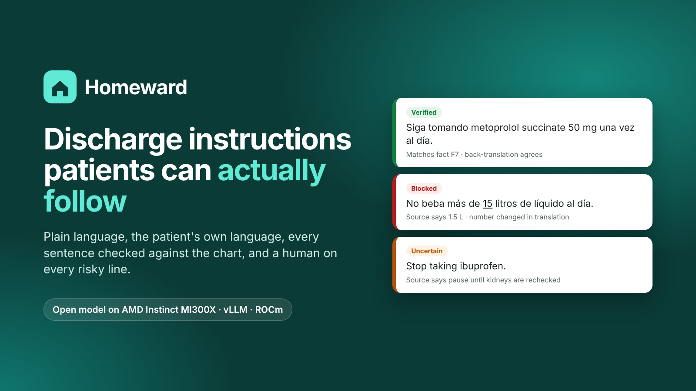
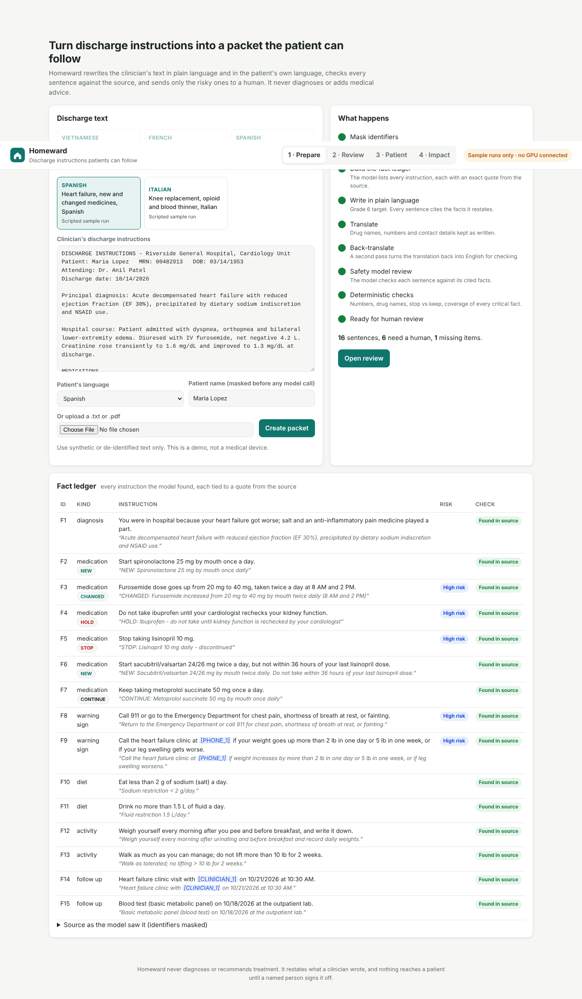
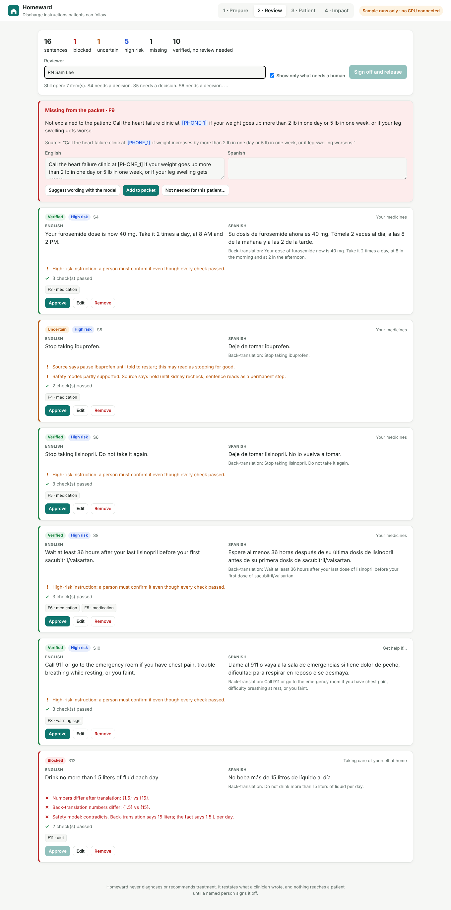
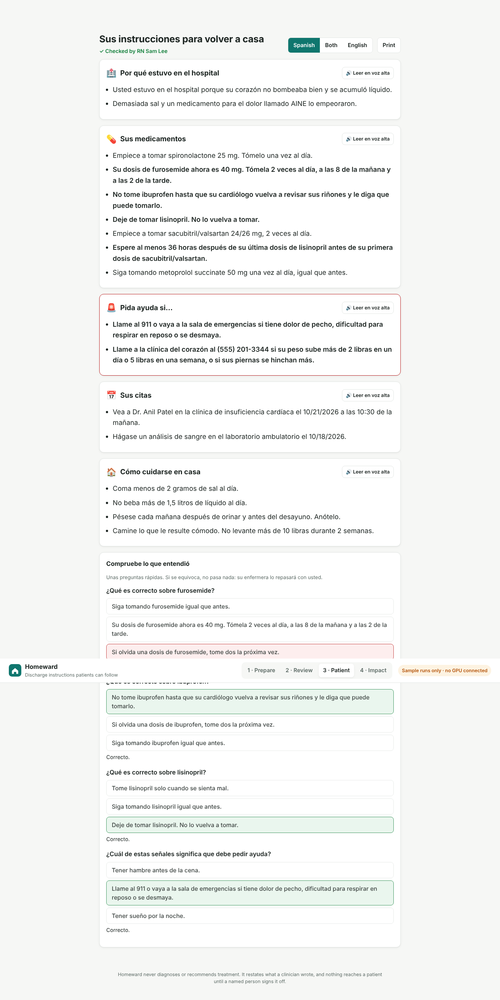

Five medicine changes in one day: one new, one doubled, one paused, one stopped, one swapped with a 36-hour gap.
The instructions are in English, written for clinicians. Maria reads Spanish. Her daughter will manage her pills.
If Maria keeps taking ibuprofen, or drinks 15 litres instead of 1.5, she is back in hospital within the week.

Five schema-constrained model calls per packet, all on one AMD Instinct MI300X. Deterministic checks around the model, so its mistakes are caught instead of trusted.
| Requirement | How it is handled |
|---|---|
| No diagnosis or advice | Restates the clinician only. No cited fact or an unknown medicine means blocked. |
| Wrong or unsupported output | Quote check, rule-based medicine cross-check, number / medicine / stop-vs-keep checks, safety model. |
| Sensitive information | Identifiers masked before any model call; self-hosted model; memory-only cases. |
| Uncertain results | green amber red on every sentence, with the reason. Unsupported language or too many failures go to an interpreter. |
| High-risk decisions | Blood thinners, insulin, opioids, any stop or dose change, warning signs: always signed off by a person. |
| Human review | Nothing reaches the patient without a named sign-off. Red lines cannot be approved as they are. Full audit trail. |


scripts/benchmark.py)Homeward never diagnoses. It makes sure what the clinician wrote reaches the patient, in their language, and that they understood it.